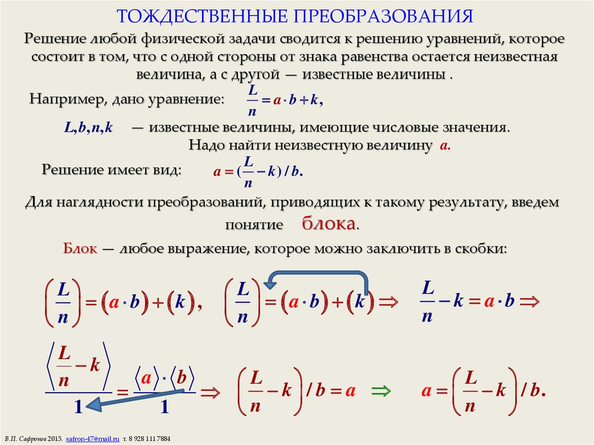

Из чисел и переменных с помощью знаков сложения, вычитания, умножения, деления, возведения в степень и извлечения корней и с помощью скобок составляются алгебраические выражения.
Уравнения – это равенства, которые выполняются только при некоторых значения переменных.
Тождества – это равенства, которые выполняются при всех значениях переменных.
Мы будем выполнять только тождественные преобразования, т.е. такие, при которых не изменяется значение выражения, меняется только внешний вид.
Замена одного выражения другим, тождественно равным ему, называется тождественным преобразованием выражения.
Основные понятия:
Одночленом называется такое выражение, которое содержит числа, степени переменных и их произведения и не содержит никаких других действий над числами и переменными.
3а*(2,5а3), (5аb2)*(0,4c3d), x2y*(-2z)*0,75 – одночлены.

Одночлены называются подобными, если они отличаются коэффициентами или не отличаются. Например: 18х2уz3 и -8х2уz3, 3ав и 3ав – подобны.
Многочлен – это сумма одночленов.
Основные тождественные преобразования
Вынесение общего множителя за скобку
28х3-35х4= 7х3*4-7х3*5х=7х3(4-5х)
Способ группировки
х3-3х2+5х-15=(х3-3х2)+( 5х-15)=х2(х-3)+5(х-3)=(х-3)(х2+5)
Использование формул сокращенного умножения
1. (a+ b)(a-b) = a2 - b2
2. (a + b)2 = a2 + 2ab + b2 3. (a - b)2 = a2 - 2ab + b2
4. (a + b)( a2 - 2ab + b2) = a3 + b3 5. ( a - b)( a2 + 2ab + b2) = a3 - b3
Разложение на множители квадратного трехчлена.
Примеры для самостоятельного решения
1) (у + 4)2
2) (9 + а)2
3) (а + с)2
4) (4a+2)3
5) (2b−4)3
6) (3c+1)3
7) (5a+2b)3
8) (2a)3−b3
9) 64a2−164
10) (3a+2c)3